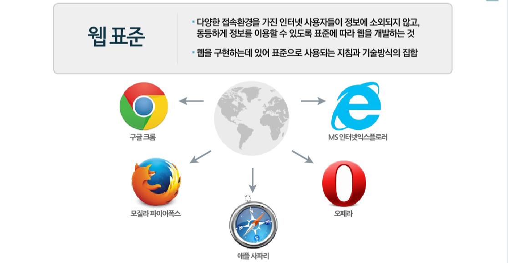
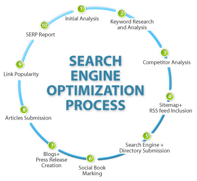
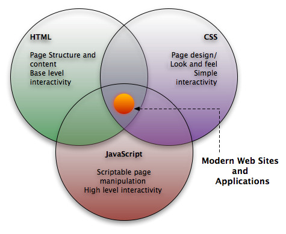
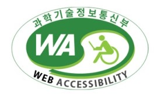

웹 표준이란?
정의

월드 와이드 웹(WWW)을 구현하기 위해 따라야 할 표준 또는 규격.
다양한 웹 기술을 통해 수많은 콘텐츠가 공유되고 확산되면서, 웹 접근성, 사생활 보호, 보안, 국제화 등을 고려한 웹 기술의 표준화가 필요하게 되었다.
국제 표준화 기구로 월드 와이드 웹 컨소시엄(W3C)이 있으며, 대표적 웹 표준으로 하이퍼텍스트 생성 언어(HTML), 확장성 하이퍼텍스트 생성 언어(XHTML), 종속형 시트(CSS: Cascading Style Sheets), 자바스크립트(JavaScript), 웹 사용에 대한 웹 콘텐츠 접근성 지침 등이 있다.
웹 표준이 중요한 이유
- 산업현장에서 부품들의 표준화가 돼 있지 않으면 업체마다 서로 호환이 되지 않고, 같은 업체에서 생산하는 부품도 품질 보장이 되질 않을 것이다. 웹 환경은 본질적으로 '통신'이기 때문에 더욱 더 표준화가 중요해진다.
- 개인의 프로젝트인가 국제 연합 수준의 대규모 프로젝트인가와 상관 없이 사용하는 사람이 많아지면 웹 표준화는 반드시 해결해야 할 과제가 된다.
- 표준이 없으면 웹 사이트 개발자는 사실상 두 개의 사이트를 만들어야 해 3배의 노동력과 시간이 든다. 사회 전체적인 비용이 증가하는 것이다.
시간과 예산이 빠듯한 상황에서 웹 개발자는 결국 하나만을 선택하고 나머지를 버릴 수밖에 없다. 이는 정보 제공에 차별을 발생시킨다.
웹 표준의 장점
검색 친화적인 웹 사이트 구현

meta 요소를 이용한 정확한 문서 정보의 제공과 적절한 제목(heading 요소)의 사용, 의미에 맞는 마크업은 검색 시 결과에 영향을 미칠 수 있는 중요한 정보이다. 따로 홍보를 위한 비용을 지출하지 않더라도 충실하게 작성된 문서 정보만으로도 검색의 효율성을 높일 수 있다.
호환성의 확보
표준 웹 기술을 사용하게 되면, 기종 혹은 플랫폼에 따라 달리 보이거나 혹은 의도된 바와는 전혀 다른 모습의 사이트가 보이게끔 하는 것을 방지할 수 있다.
구조와 표현의 분리

웹 표준을 준수함으로써 웹 문서 파일의 용량을 줄일 수 있고 이로 인한 트래픽 감소 효과를 얻을 수 있다. 이는 물리적인 서버용량의 증가를 막을수 있기 때문에 경제적인 효과를 얻을 수 있다.
웹 접근성이란?
정의

장애 여부에 상관없이 누구나 원활하게 웹페이지를 이용할 수 있어야 한다는 것을 의미한다.
웹 접근성의 필요성
장애인과 비장애인의 차별이 있으면 안 되기 때문에 동등한 서비스 접근이 필요하다.
웹 접근성의 지침서
인지 가능성
- 정보와 사용자 인터페이스 구성물은 사용자가 인지할 수 있는 방식으로 제공돼야 한다
- 텍스트가 아닌 콘텐츠가 있을 경우 이를 텍스트로 이루어진 대체 콘텐츠와 함께 제공해야 한다.
- 시간에 기반한 미디어(사전 녹음된 음성, 사전 제작된 영상, 생방송 영상)가 있을 경우 이와 함께 대체 콘텐츠를 제공해야 한다.
- 제공해야 하는 정보를 온전히 전달하고 필요한 구조를 온전히 유지하는 선에서 더 간단한 레이아웃으로 사용자에게 전달할 수 있도록 콘텐츠를 만들어라.
- 배경에서 내용물을 분리해내는 것을 포함해 사용자가 콘텐츠를 보거나 읽는 것을 더 쉽게 해낼 수 있도록 만들어야 한다.
작동 가능성
- 오직 키보드만으로 모든 기능을 사용할 수 있도록 해야 한다.
- 사용자가 콘텐츠를 읽을 충분한 시간을 제공해야 한다.
- 사용자가 신체적 발작을 일으킬 가능성이 있는 방법으로 콘텐츠를 제작하지 말아야 한다.
- 사용자가 웹페이지를 살펴보고, 필요한 내용을 찾고, 지금 어느 부분을 보고 있는 것인지 알 수 있도록 해야 한다.
가독성
- 텍스트로 이루어진 콘텐츠를 읽을 수 있도록, 이해할 수 있도록 만들어야 한다.
- 웹페이지가 사용자가 예측할 수 있는 방향으로 보이고 작동하도록 만들어야 한다.
- 사용자가 실수를 피할 수 있도록, 그리고 고칠 수 있도록 해야 한다.
호환성
- 장애가 있는 사용자를 위한 보조 기술을 포함해, 최신 기술 그리고 앞으로 사용될 기술과 호환 가능하도록 만들어야 한다.